I started watching foootball during the 2006 world cup because my father was a big fan of Italy,he influenced me to develop love for football to an extent that every free time that i get,i watch any videos about it.
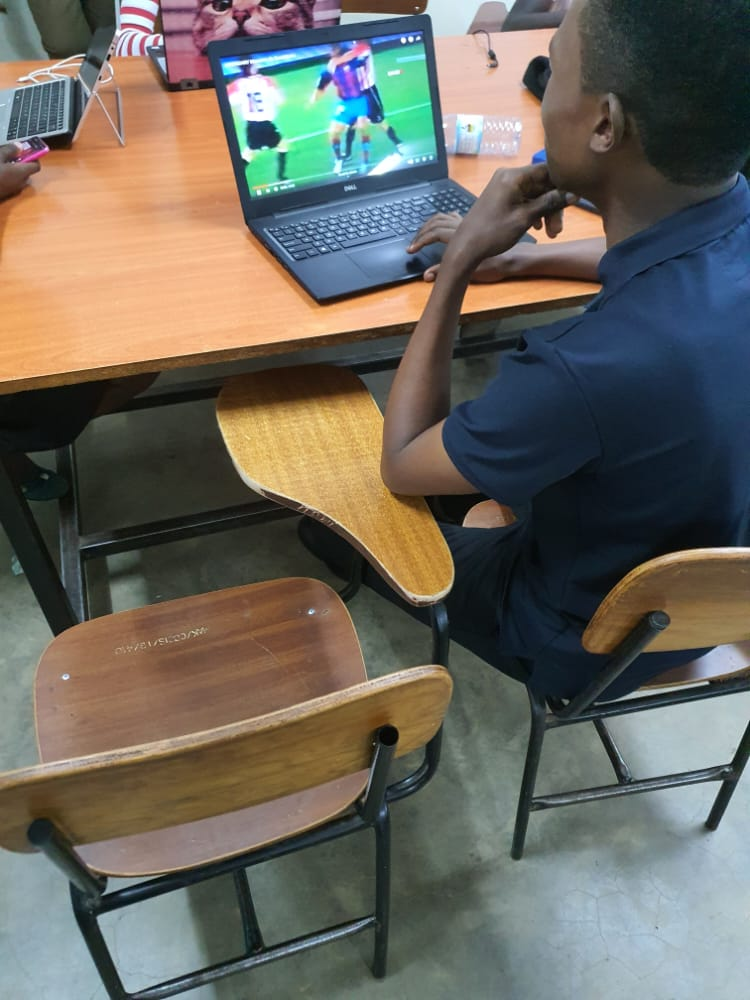 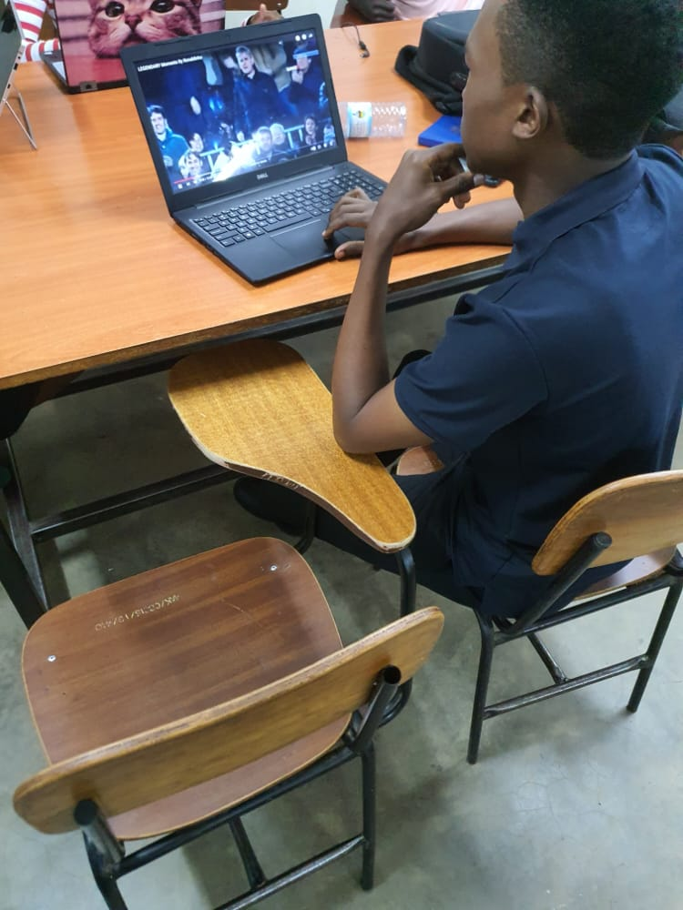 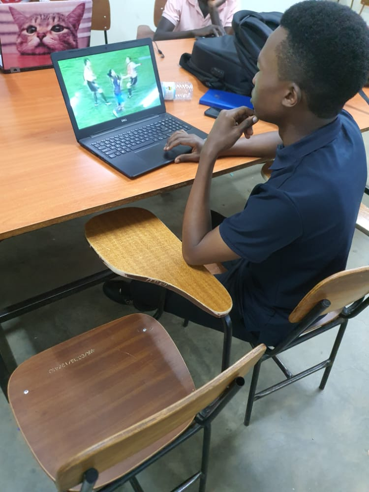Ever since i started doing literature in my senior one,i developed much love for reading various novels like Tom Sawyer,Dare to dream etc.
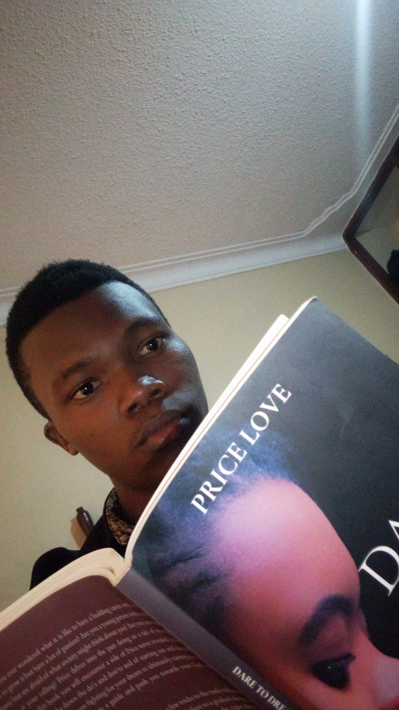 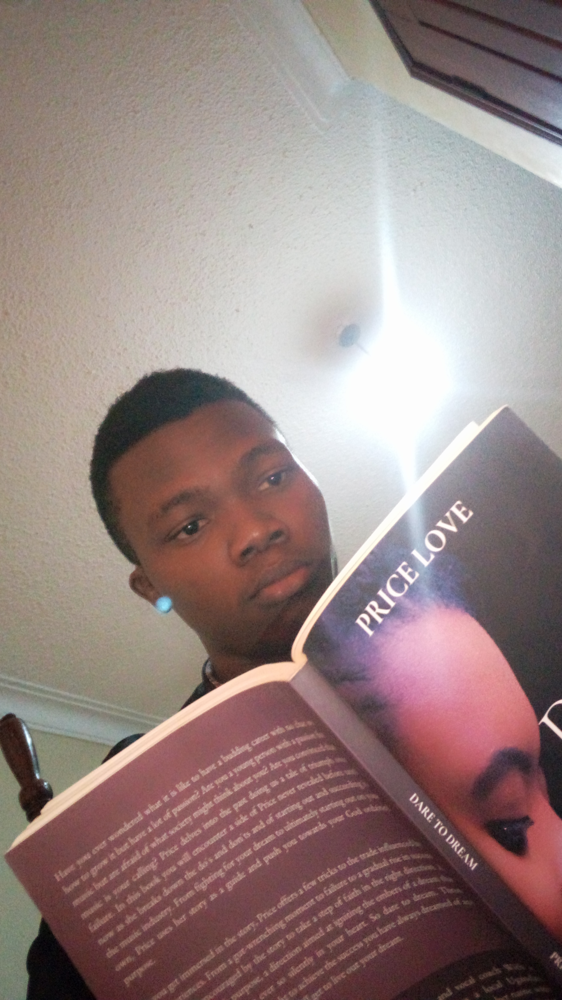 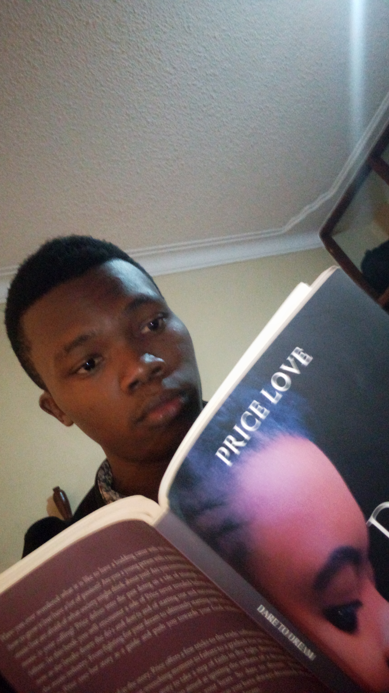Players football pictures
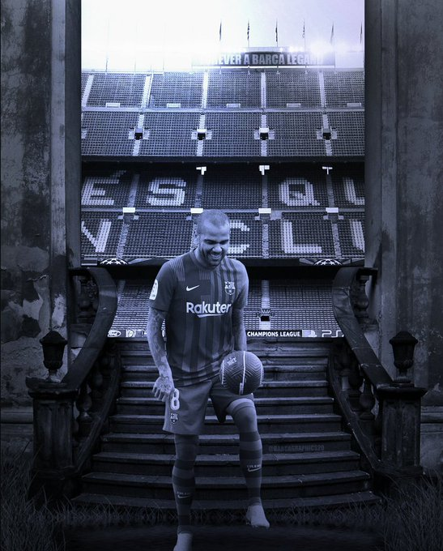 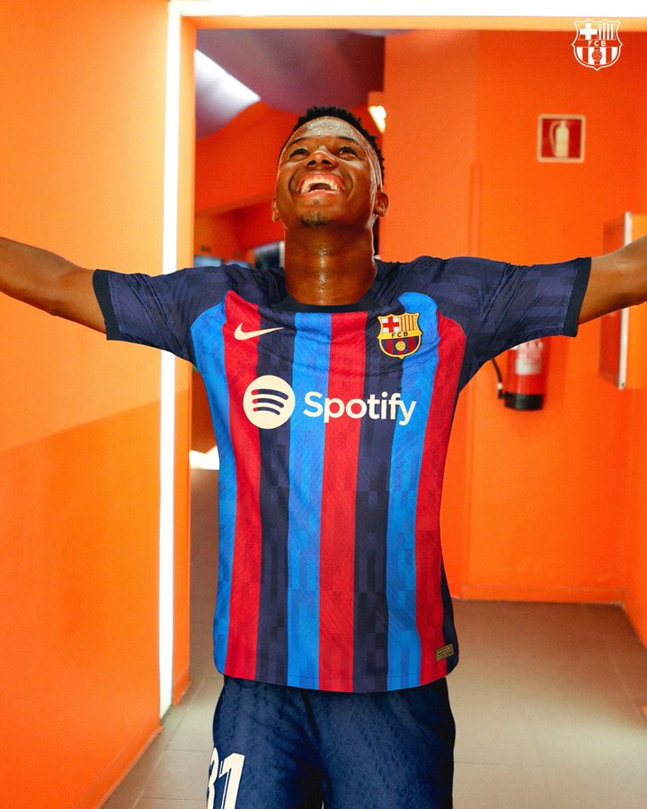 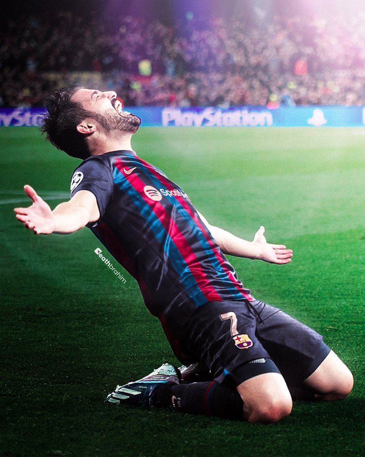Shoes
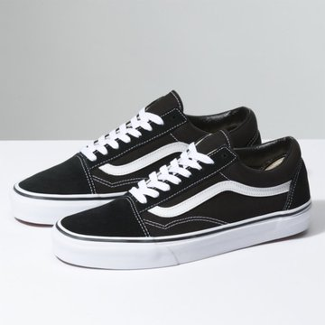 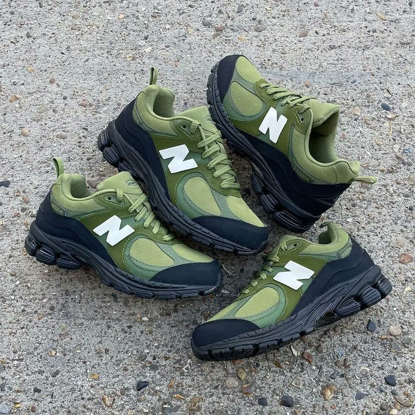Stadiums
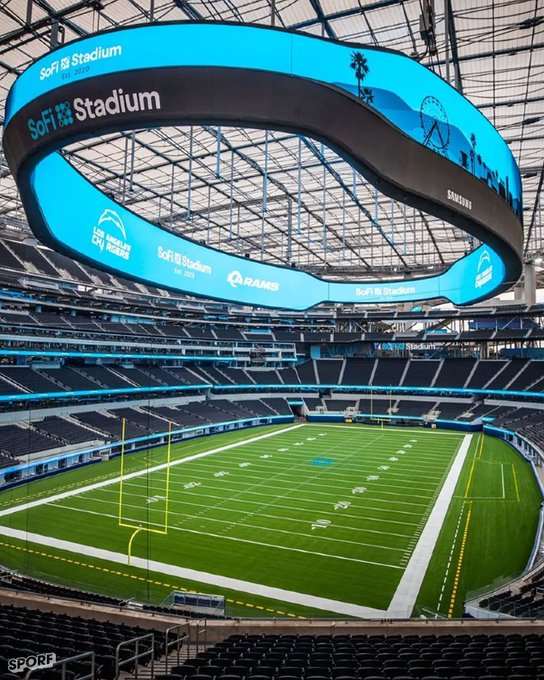 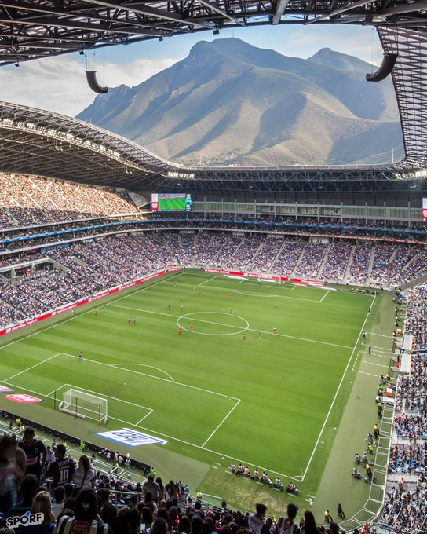 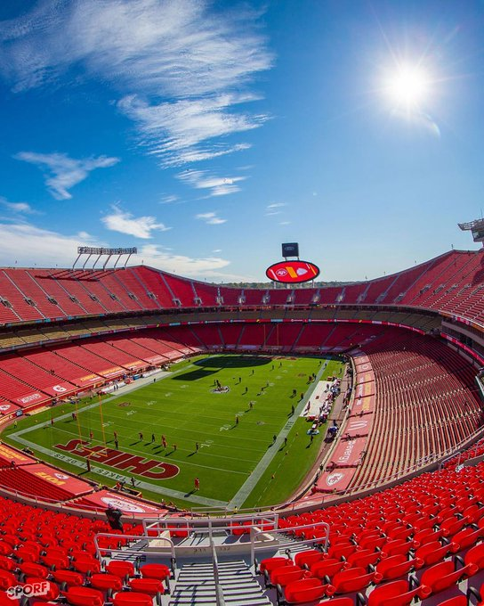